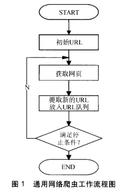
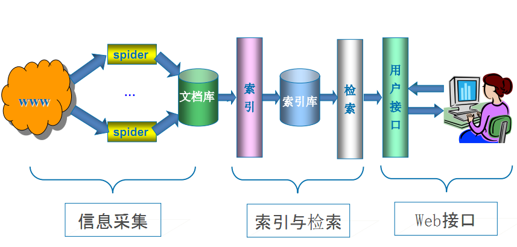

通用爬虫和聚焦爬虫
根据使用场景，网络爬虫可分为 通用爬虫 和 聚焦爬虫 两种.
通用爬虫
通用网络爬虫 是 捜索引擎抓取系统（Baidu、Google、Yahoo等）的重要组成部分。主要目的是将互联网上的网页下载到本地，形成一个互联网内容的镜像备份。
通用搜索引擎（Search Engine）工作原理
通用网络爬虫 从互联网中搜集网页，采集信息，这些网页信息用于为搜索引擎建立索引从而提供支持，它决定着整个引擎系统的内容是否丰富，信息是否即时，因此其性能的优劣直接影响着搜索引擎的效果。
第一步：抓取网页
搜索引擎网络爬虫的基本工作流程如下：
首先选取一部分的种子URL，将这些URL放入待抓取URL队列；
取出待抓取URL，解析DNS得到主机的IP，并将URL对应的网页下载下来，存储进已下载网页库中，并且将这些URL放进已抓取URL队列。
分析已抓取URL队列中的URL，分析其中的其他URL，并且将URL放入待抓取URL队列，从而进入下一个循环....

搜索引擎如何获取一个新网站的URL：
1. 新网站向搜索引擎主动提交网址：（如百度http://zhanzhang.baidu.com/linksubmit/url）
2. 在其他网站上设置新网站外链（尽可能处于搜索引擎爬虫爬取范围）
3. 搜索引擎和DNS解析服务商(如DNSPod等）合作，新网站域名将被迅速抓取。
但是搜索引擎蜘蛛的爬行是被输入了一定的规则的，它需要遵从一些命令或文件的内容，如标注为nofollow的链接，或者是Robots协议。
Robots协议（也叫爬虫协议、机器人协议等），全称是“网络爬虫排除标准”（Robots Exclusion Protocol），网站通过Robots协议告诉搜索引擎哪些页面可以抓取，哪些页面不能抓取，例如：
第二步：数据存储
搜索引擎通过爬虫爬取到的网页，将数据存入原始页面数据库。其中的页面数据与用户浏览器得到的HTML是完全一样的。
搜索引擎蜘蛛在抓取页面时，也做一定的重复内容检测，一旦遇到访问权重很低的网站上有大量抄袭、采集或者复制的内容，很可能就不再爬行。
第三步：预处理
搜索引擎将爬虫抓取回来的页面，进行各种步骤的预处理。
- 提取文字
- 中文分词
- 消除噪音（比如版权声明文字、导航条、广告等……）
- 索引处理
- 链接关系计算
- 特殊文件处理
- ....
除了HTML文件外，搜索引擎通常还能抓取和索引以文字为基础的多种文件类型，如 PDF、Word、WPS、XLS、PPT、TXT 文件等。我们在搜索结果中也经常会看到这些文件类型。
但搜索引擎还不能处理图片、视频、Flash 这类非文字内容，也不能执行脚本和程序。
第四步：提供检索服务，网站排名
搜索引擎在对信息进行组织和处理后，为用户提供关键字检索服务，将用户检索相关的信息展示给用户。
同时会根据页面的PageRank值（链接的访问量排名）来进行网站排名，这样Rank值高的网站在搜索结果中会排名较前，当然也可以直接使用 Money 购买搜索引擎网站排名，简单粗暴。

课外阅读：Google搜索引擎的工作原理
但是，这些通用性搜索引擎也存在着一定的局限性：
通用搜索引擎所返回的结果都是网页，而大多情况下，网页里90%的内容对用户来说都是无用的。
不同领域、不同背景的用户往往具有不同的检索目的和需求，搜索引擎无法提供针对具体某个用户的搜索结果。
万维网数据形式的丰富和网络技术的不断发展，图片、数据库、音频、视频多媒体等不同数据大量出现，通用搜索引擎对这些文件无能为力，不能很好地发现和获取。
通用搜索引擎大多提供基于关键字的检索，难以支持根据语义信息提出的查询，无法准确理解用户的具体需求。
针对这些情况，聚焦爬虫技术得以广泛使用。
聚焦爬虫
聚焦爬虫，是"面向特定主题需求"的一种网络爬虫程序，它与通用搜索引擎爬虫的区别在于： 聚焦爬虫在实施网页抓取时会对内容进行处理筛选，尽量保证只抓取与需求相关的网页信息。